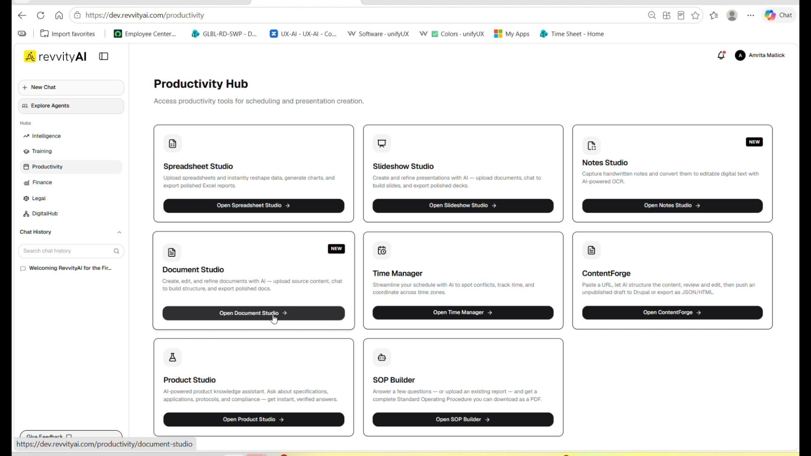
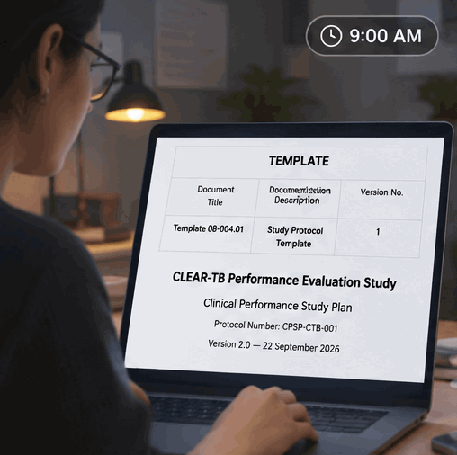

Rethinking high-velocity document workflows
Turning tangled enterprise document drafting, editing, and templatisation into unified product experience.
What should modern document creation feel like?
Enterprise teams spend up to 40% of their workday drafting, revising, and tracking business documents across fragmented suites. Most traditional software treats documents as isolated static pages, forcing users to constantly context-switch between spreadsheets, email threads, and compliance portals.
Document Studio was conceived as a high-performance workspace where live data, structured templates, and intelligent automation live in one cohesive surface. Our goal was to eliminate administrative friction and allow knowledge workers to focus on synthesis and decision-making.
The Document Stack is broken across silos
When observing legal, financial, and operations teams, we found that document generation is never an isolated writing task. It is a multi-layered pipeline trapped between rigid legacy software and disconnected communication channels.
The Core Churn: Context Fragmentation
Users were repeatedly copy-pasting figures between financial calculators, spreadsheets, and Word documents. A single typo meant restarting entire multi-sign-off approval cycles.
A unified canvas with live data synchronization
We designed Document Studio with three guiding principles:
1. Canvas-First Flexibility
Moving away from rigid pagination towards modular document blocks that flex dynamically based on content depth and screen real estate.
2. Zero-Copy Data Binding
Numbers, charts, and terms link directly to master data repositories, updating in real time with comprehensive change audits.
Streamlining drafting to sign-off in four gestures
By analyzing the end-to-end journey from initial template selection to final stakeholder distribution, we consolidated 14 distinct legacy dialogs into one unified sidebar drawer with live canvas previews.

Smart tagging surfaces relevant contract clauses based on previous corporate deals.
Stakeholders review, annotate, and approve clauses without leaving the document viewport.
Key takeaways from user testing & discovery
We conducted contextual inquiries and usability walkthroughs with 12 enterprise product leads and operations specialists. Two central user insights shaped our interaction model:
Memory for recall, not searching
Users don't want to dig through complex folder trees. They want contextual suggestions and instant command-palette search directly inside their active drafting flow.
Surface relevant suggestions in-situ
Contextual prompts and compliance alerts should appear beside the text at the moment of editing, rather than as a wall of errors at submission time.
Testing and iterating with feedback
We got users to try these prototypes, observed how they navigated the interface, how they felt during multi-step drafting, and gathered qualitative feedback across multiple iteration cycles.

Reduced Cognitive Friction
During testing, 10 out of 12 participants completed complex multi-clause review workflows 52% faster than with existing enterprise software, citing the calm hierarchy and zero page refreshes.
Crafting a calm, readable enterprise design system
Every typographic size, border weight, and surface shade was tuned to minimize eye fatigue during 8-hour continuous drafting sessions:
- Warm Paper Surfaces: Subtle off-white backgrounds (`#f9f9fb`) instead of harsh pure white to protect visual stamina.
- Terracotta Accent Markers: Intentional, restrained color accents (`#e05320`) guide eye-scanning to primary action triggers without visual noise.
- Progressive Disclosure: Secondary tools and metadata remain tucked in collapsible side drawers until summoned via quick keyboard shortcuts.
Looking ahead
Document Studio demonstrated that enterprise tools don't have to be clunky or bloated to be powerful. By pairing disciplined information architecture with high-craft frontend engineering, complex workflow applications can feel as calm and fluid as consumer software.